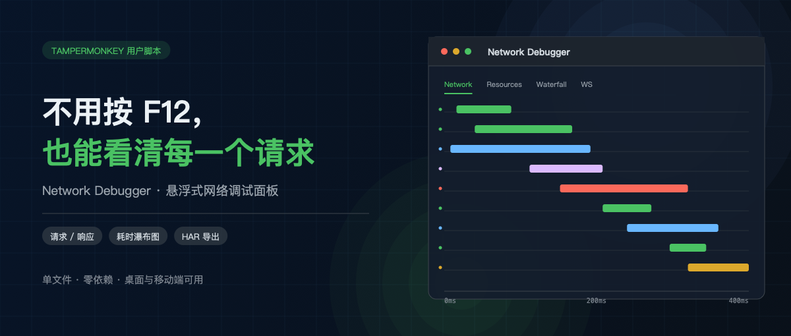
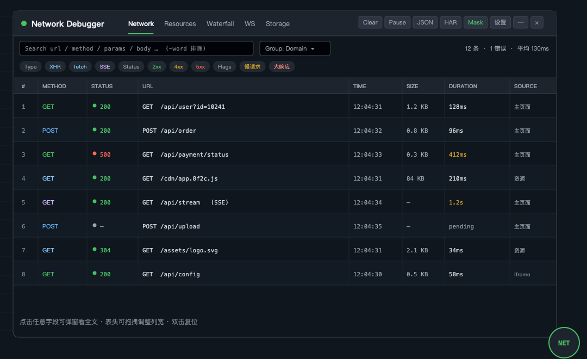
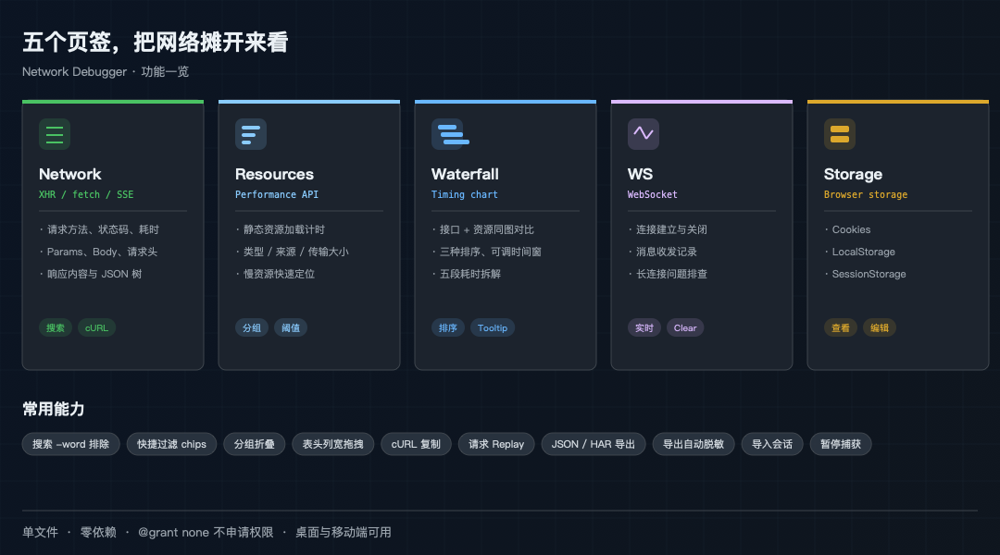
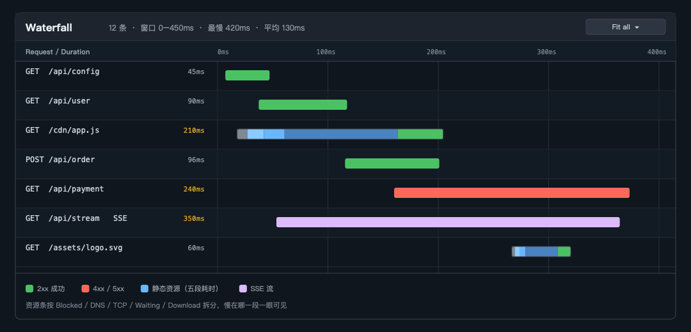
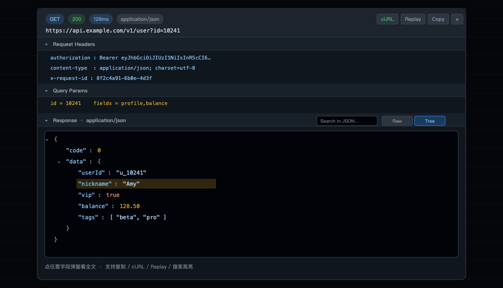

不用按 F12，也能看清网页里的每一个请求
一个悬浮在页面右下角的网络调试面板，点开就能用

有时候只是想看一眼：这个接口到底返回了什么？
在桌面上，按 F12、切到 Network、从一堆请求里翻出那一条、点开 Preview，动作很熟。但换成真机上的移动浏览器、客户环境里的内嵌 WebView，或者只是想给不写代码的同事指一下「就是这里报错」，这一串动作就变得特别笨重。
所以做了这样一个小工具：任意网页右下角一个 NET 图标，点开，就是一整块深色的网络调试面板。不切窗口，不装客户端，跟着页面走。
它是什么，不是什么
它是一个单文件的 Tampermonkey 用户脚本。装好之后，会在页面里接管 XMLHttpRequest、fetch、EventSource、WebSocket，再用 PerformanceObserver 收一份静态资源的加载计时；iframe 里的记录也会汇总到主页面板。
先说清楚边界：它不是系统级抓包，不替代 Charles、Fiddler 或 DevTools Network。地址栏导航、没经过页面 JS 的请求，它看不到。
但它有几个恰好很好用的地方：零部署、跟着页面走、移动浏览器里也能用。而且能顺手看到 DevTools 里不那么直观的东西——一条 SSE 流累计收到了多少事件、某个请求复制成 cURL 长什么样、把整段会话打包成 HAR 直接发给同事。

五个页签，把网络摊开来看

Network｜XHR / fetch / SSE 的请求与响应：方法、状态码、耗时、URL、Query 参数、请求头、响应头、响应内容，一屏看全。
Resources｜页面加载的静态资源，带类型、来源、传输大小和计时信息。
Waterfall｜接口和资源画在同一张耗时横道图上，可以按开始时间、最新、耗时排序，时间窗也能调。资源条会拆成 Blocked / DNS / TCP / Waiting / Download 五段，慢在哪一段一眼就知道。
WS｜WebSocket 的连接与消息收发记录。
Storage｜Cookies、LocalStorage、SessionStorage，直接查看、新增、编辑、删除。

从一大堆请求里，快速找到那一条
搜索框可以搜 URL、方法、参数、Body、请求头、状态码、响应内容、MIME 类型；加个减号就是排除，比如 api/user -healthcheck。
上面还有一排快捷过滤：按请求类型、HTTP 方法、状态码、来源（主页面 / iframe），以及「错误」「慢请求」「有 Body」「有 Params」「大响应」这些标记，点一下就筛出来。
表格支持分组折叠，表头可以直接拖列宽、双击复位；面板能全屏、折叠、调宽度，悬浮图标也能拖到顺手的位置，位置会记住，右键还能一键复位。
点开详情，把内容看明白
任何一格内容点一下，都会弹窗看全文并支持复制，长 URL、长 Header 不用再靠鼠标拖选。
响应是 JSON 时会自动格式化，可以切成树形展开逐层看，也能切回 Raw 原文；树里还能搜索并高亮命中的字段。图片响应直接给预览，二进制文件给出类型与大小提示，SSE 会实时累计事件数。
瀑布图里的每一条也都能点，直接跳回这条请求的完整详情。

把现场带走：复制、重放、导出、导入
一条请求可以一键生成 cURL 命令，也可以 Replay 再发一次（会二次确认，避免手滑重放写操作）。
整段会话能导出成 JSON 或 HAR。HAR 带 pages、queryString、cookies 等完整结构，可以直接丢进别的工具继续分析；导出的 JSON 也能再导回来，方便把现场交给同事接着查。
隐私上做了默认保护：导出时会遮蔽 Authorization、Cookie、token、密码以及常见的敏感参数，Cookie 只留名称不留值。需要原始内容时可以关掉脱敏开关，面板内始终显示完整信息，只有导出环节做脱敏。
设置与适配
所有可调项集中在一个 ⚙ 设置面板：暂停捕获、导出脱敏、紧凑行高，慢请求 / 慢资源 / 大资源的阈值，最大记录数，瀑布图时间窗；另外可以一键复位列宽、图标位置和全部默认值。
记录条数可以自己设上限，到顶自动淘汰最旧的，挂一整天也不用担心越攒越多。
窄屏下自动切移动端布局：表格可横向滑，弹窗内容可纵向滚；图标位置、列宽和各项设置都会本地保存，刷新不丢。
脚本不申请任何浏览器特权（@grant none）。代价是设置按站点各自独立，换域名要重设一遍——设置面板里也写明了这一点。
三步装上
1 浏览器装 Tampermonkey 或 Violentmonkey（Chrome / Edge / Firefox / Safari 均可）。
2 打开项目地址，新建用户脚本，把 network-debuger.js 全文粘贴保存；或直接走 Greasy Fork 的脚本页安装。
3 刷新任意网页，右下角出现 NET 图标，就能用了。
项目地址：github.com/xbeeant/tampermonkey-scripts
Greasy Fork 脚本 ID：601227
单文件、零依赖、MIT 协议，元数据里带更新地址，后续可自动更新。
适合放在哪些场景
真机 / WebView 上排查接口问题、前后端联调时快速核对请求参数、验证 SSE 与 WebSocket 消息、看资源加载慢在哪一段、把一次复现的完整请求打包给同事。或者，只是单纯不想为了看一眼返回值而切一次窗口。
如果你也常在这些场景里折腾，可以试试它。用得不顺手的地方，欢迎提 issue。
— 完 —